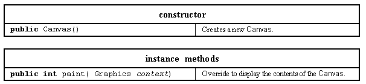
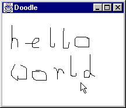
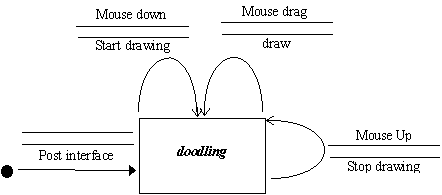

The Canvas class supplies a screen area upon which graphical output can be produced, or which can be extended to provide a specialized user interface component. The major resources of this class are presented in Table 2.18.

Table 2.18 Major resources of the Canvas class.
The Canvas constructor takes no arguments and creates an empty drawing area. The only method declared by the class is paint() which overrides the Component paint() method. The argument to this method is a Graphics context whose construction, meaning and use will be explained below and in following chapters.
To illustrate the Canvas class a Doodle applet will be constructed. This applet supplies a small drawing area upon which doodles can be produced by dragging the mouse pointer. The appearance of this applet is given in Figure 2.13 and its STD in Figure 2.14.

Figure 2.13 A Canvas based Doodle applet.

Figure 2.14 The Doodle applet's STD.
As with the DecimalToHex applet above the simplicity of this STD and the absence of any preconditions indicates that it should be very intuitive to the user. However, in order to implement this design the Canvas class will have to be extended to produce the Doodle class. The reason for this is concerned with the need for the Doodle instance to handle its own events and not to have them handled on its behalf by a listener object. This will require the Doodle instance handling its own events via the event dispatching mechanism and, unlike all the examples which have been introduced so far, not relying upon the registration of listeners.
As an extension of the Canvas class, the Doodle class should be completely self contained so that other clients could use a Doodle instance simply by importing the class and not by having to import both the class and provide a listener.
In order for the Doodle class to encapsulate its own event processing functionality it will have to enable the appropriate events upon itself, using the Component enableEvent() method and override the appropriate processWhateverEvent() methods. Specifically, from the STD, it will have to enable MOUSE_MOTION events and MOUSE_EVENT (mouse button) events, and override the processMouseEvent() and processMouseMotionEvent() methods. The first part of the implementation of the Doodle class is as follows.
0038 class Doodle extends Canvas {
0039
0040 private int lastX;
0041 private int lastY;
0042 private Graphics context;
0043
0044 protected Doodle( int width, int height) {
0045 super();
0046 this.setSize( width, height);
0047 this.enableEvents( AWTEvent.MOUSE_MOTION_EVENT_MASK |
0048 AWTEvent.MOUSE_EVENT_MASK);
0049 } // End Doodle constructor.
0050
0051
0052 public void addNotify() {
0053 super.addNotify();
0054 context = this.getGraphics().create();
0055 } // End addNotify.
This class is not declared public as it is contained, for convenience, within the CanvasExample class file. This restricts its visibility to the CanvasExample class preventing it from being seen or used outside that class. For this reason its constructor is declared without public visibility, on line 0044.
The first two private data attributes, lastX and lastY, declared on lines 0040 and 0041, are used to record the last known location of the mouse pointer. The third attribute, an instance of the Graphics class called context, is required to draw on the Doodle's window as will be explained briefly below and in detail in following chapters.
The constructor commences by calling its parent (Canvas) constructor and then setting its size to that indicated by its two arguments. On lines 0047 and 0048 the two masks, MOUSE_MOTION_EVENT_MASK and MOUSE_EVENT_MASK, declared in the AWTEvent class, are ored ( | ) together and the resulting value passed as an argument to the Doodle's enableEvent() method. The consequence of this is that events generated by moving the mouse or pressing its buttons will be dispatched directly to the Doodle instance and not to any registered listener objects. In order for the instance to be able to respond to these events its processMouseEvent() and processMouseMotionEvent() methods will have to be overridden, as shown below.
The Doodle's addNotify() method also needs to be overridden in order to initialise the Graphics context instance. This method will be called when the peer component is created and it is only at this stage, when the physical properties of the component's window are known, that its Graphics attribute can be obtained and copied, as on line 0054.
0058 protected void processMouseEvent( MouseEvent event) {
0059
0060 if ( event.getID() == MouseEvent.MOUSE_PRESSED) {
0061 lastX = event.getX();
0062 lastY = event.getY();
0063 } // End if.
0064 } // End processMouseEvent.
0065
0066
0068 protected void processMouseMotionEvent( MouseEvent event) {
0069
0070 if ( event.getID() == MouseEvent.MOUSE_DRAGGED) {
0071 int currentX = event.getX();
0072 int currentY = event.getY();
0073
0074 context.drawLine( lastX, lastY, currentX, currentY);
0075 lastX = currentX;
0076 lastY = currentY;
0077 } // End if.
0078 } // End processMouseMotionEvent.
0079
0080 } // End class Doodle.
The processMouseEvent() method will be called every time a mouse button is pressed or released and, as this class is only interested in mouse press events, line 0060 uses the MouseEvent's getID() method to determine if the event was generated by a mouse press. If so the getX() and getY() methods are called to obtain and store the current location of the mouse pointer in the classes' instance attributes, lastX and lastY.
The processMouseMotionEvent() method contains a similar guard and responds only to mouse drag events, drawing a line from the last known mouse location to the current location. As the current location will be the last known location for the next mouse drag event the values of the instance attributes are updated before the method finishes. A Graphics instance encapsulates within itself all the knowledge required to draw onto a particular window and its drawLine() method, as used on line 0074, will draw a line from the position specified by its first two arguments to that specified by its last two arguments.
The effect of these two methods is that when a mouse down event occurs the Doodle instance gets ready to draw by storing the location where the event occurred. A succession of mouse drag events may then occur, the first of which will cause a line to be drawn from the location of the mouse press to the current location of the mouse, and subsequently from where the last line ended to the current location. When the mouse button is released mouse drag events will stop being dispatched and the mouse can be moved, without drawing, until the button is pressed again, repeating the sequence.
The processMouseEvent() and processMouseMotionEvent() methods are both declared with protected visibility as they are called indirectly from the processEvent() method, inherited from the Component class, as a consequence of the events being enabled upon the component by the enableEvent() method called on line 0047. This is unlike the declaration of methods by listener interfaces, such as actionPerformed(), which must be declared with public visibility.
As the Doodle class encapsulates all the drawing functionality the CanvasExample class need only declare an instance of the class and install it, as follows, to provide the demonstration client. Any other client which requires a doodling area could likewise import the Doodle class, assuming it were stored in its own file, and create and install an instance into its interface.
0001 // Filename CanvasExample.java.
0002 // Provides an initial example of extending the AWT canvas class.
0003 // Written for the Java interface book Chapter 2 - see text.
0004 //
0005 // Fintan Culwin, v 0.2, August 1997.
0006
0007 import java.awt.*;
0008 import java.awt.event.*;
0009 import java.applet.*;
0010
0011
0012 public class CanvasExample extends Applet {
0013
0014 private Doodle aDoodlingArea;
0015
0016 public void init() {
0017 aDoodlingArea = new Doodle( 200, 150);
0018 this.add( aDoodlingArea);
0019 } // End init.
0020
0021
0022 public static void main( String args[]) {
---- // Details of main() omitted,
0032
0033 } // End main.
0034 } // End class CanvasExample.
This event handling technique, enabling events on the component and overriding the methods which process the events enabled, should only be used when a Component is having its functionality extended. Where an established Component, either pre-supplied or extended, is being used in an interface then the alternative technique, of registering listeners with it, should be used. The Doodle component is totally self contained and does not generate any events which have to be listened to, which may be required if it is to be reused as a part of a more complex interface. The techniques to introduce this capability will be introduced when more complex extended components are introduced in the next chapter.